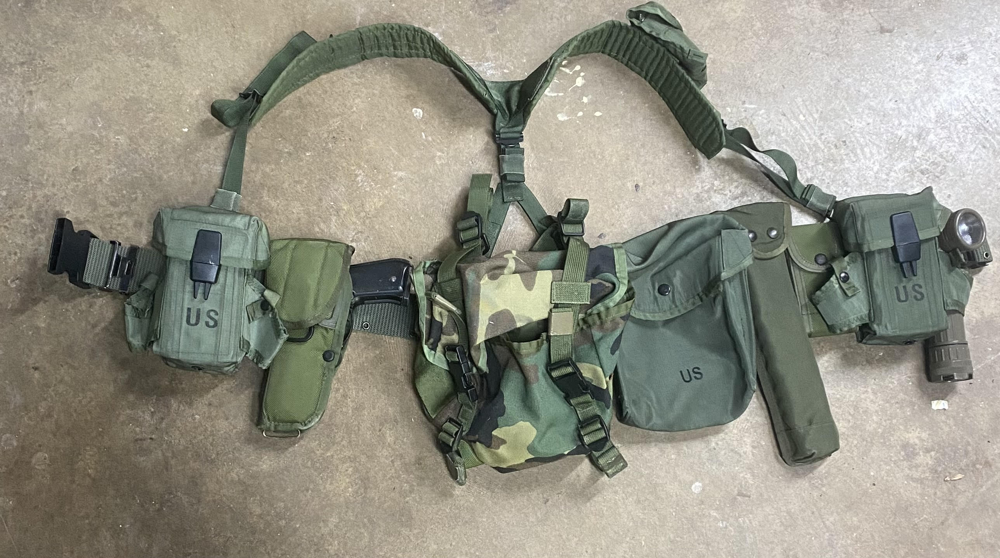
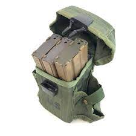

All Purpose Lightweight Individual Carrying Equipment or Alice is a type of belt and suspenders load bearing equipment used by the United States from 1973 to around 2006 but don't let age fool you, the old girl is still viable option for civilian/militia use. While it may not be the most high spped, or fancy tactical gear out there, its cost effectiveness and durability makes it a perfect choice for those on a budget, if you have a lot of people on your team to equip, or are more interested in retro setups like those used in Operation Gothic Serpent (battle of Mogadishu) or literally any conflict the United States has been invovled in since 1973 up to the middle of the Great War On Terror or GWOT.
The Author's set up
This setup is multipurpose as it can be used for both Airsoft and real steel which is jargon for actual firearms, we will be using both interchangably and when it comes to capacity, we will be using real steel numbers most of the time, due to the fact all airsoft mags are varying in capacity depending on manufacturers and many more factors we will not be getting into. This is what could be reffered to as a riflemans setup at most airsoft fields, or as a typical infantry setup for those it should concern. Starting from left to right, consisting of
- Two magazine pouches with grenade pouches holding three 30 round STANAG magazines each or three airsoft M4 pattern magazines in which case capacity will vary Most airsoft grenades will not work in these pouchesunless they are pyrotechnic grenades since they usually are too big and/or cylindrical, they're meant to hold actual fragmentation grenades
- One US M12 Universal Holster with KWA M9 PTP but can also hold an M1911 or most other pistols with a 5 inch barrel
- One butt pack which should be used for sustainment for long events, such as snacks
- One SAW gunners pouch, being used as a dump pouch for spent mags
- One M3 clip on bipod pouch, with bipod. Not needed urgently
- One 2 mag M1911 bianchi magazine pouch M1025
- One Fulton Flashlight stuffed in second M4 Mag pouch. However it is advised to not use the Flashlight so it doesn't get shot out by a BB unless you are crafty enough to replace the lens with a lexan or other durable material like plexiglass